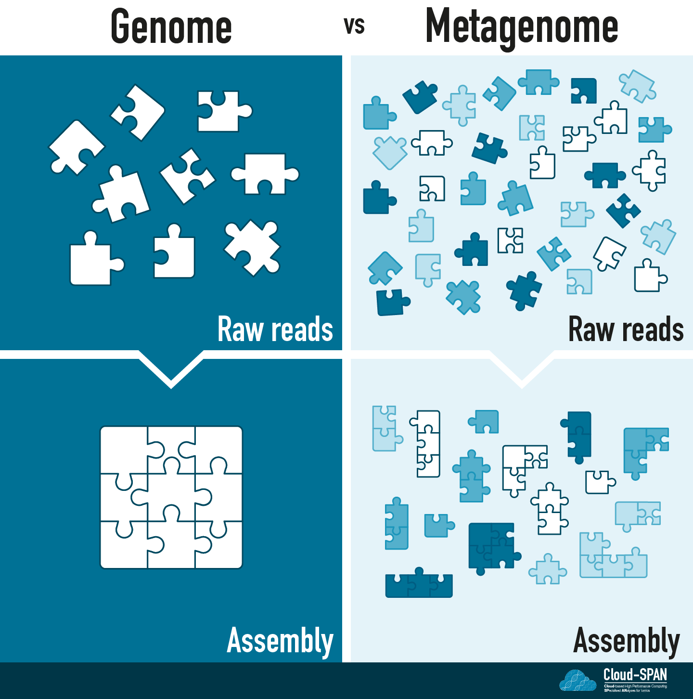

Metagenome Assembly
The analyses in this lesson will take several hours to complete! You can find some recommended reading at the end of the page that you might want to read whilst you’re waiting.
Assembling reads
In the last episode, we put both the long and short raw reads through quality control.
They are now ready to be assembled into a metagenome. Genomic assembly is the process of joining smaller fragments of DNA (i.e., reads) to make longer segments to try and reconstruct the original genomes.
Genomic assembly
You can think of Genomic assembly as a jigsaw puzzle: each raw read corresponds to a piece of the puzzle and you are aiming to complete the puzzle by joining these pieces together in the right order.
There are two main strategies for genome assembly:
- Mapping to a reference genome - requires that there is a complete genome of the organism you have sequenced, or a closely related organism. This is the approach you would take if you were trying to identify variants for well-characterised species, such as humans.
- De novo assembly - does not use a reference but instead assembles reads together based on the content of the reads (the specific approach depends on which assembly software you are using). It is commonly used for environmental samples which usually contain many organisms that have not been cultured previously.
Continuing the jigsaw analogy, mapping to a reference genome would be equivalent to having an image of the final puzzle to compare your assembly to. In contrast, in de novo assembly you would have to depend entirely on which pieces fit together.
Metagenomic assembly
Metagenomic sequencing adds another layer to the challenge of assembly! Instead of having one organism to assemble you now have many! Depending on the complexity of a metagenome you could have anywhere from a handful of organisms in a community to thousands.
You no longer have one jigsaw puzzle, but many with all the pieces mixed together.

Many of the communities sequenced using metagenomics contain previously uncultured microbes (often known as microbial dark matter) so they are unlikely to have reference genomes. In addition, you don’t usually know what you are sequencing - the community of organisms is unknown.
Assembling our metaphorical jigsaw will be a challenge. We have many, perhaps thousands, of jigsaws to assemble and no pictures
Luckily there are programs, known as assemblers, that will do this for us!
Metagenomic assembly faces additional problems, which means we need an assembler built to handle metagenomes. These additional problems include:
- Differences in coverage between the genomes, due to differences in abundance across the sample.
- The fact that different species often share conserved regions.
- The presence of several strains of a single species in the community
The assembly strategy also differs based on the sequencing technology used to generate the raw reads. Here we’re using raw data from Nanopore sequencing as the basis for this metagenome assembly so we need to use a metagenome assembler appropriate for long-read sequencing.
We will be using Flye, which is a long-read de novo assembler for assembling large and complex data with a metagenomic mode. Like all our programs, Flye has been pre-installed onto your instance.
Flye is a long-read assembler
Make sure you’re still logged into your cloud instance. If you can’t remember how to log on, visit the instructions from earlier today.
Navigate to the cs_course directory.
Code
cd ~/cs_courseRun the flye command without any arguments to see a short description of its use:
Code
flyeOutput
$ flye
usage: flye (--pacbio-raw | --pacbio-corr | --pacbio-hifi | --nano-raw |
--nano-corr | --nano-hq ) file1 [file_2 ...]
--out-dir PATH
[--genome-size SIZE] [--threads int] [--iterations int]
[--meta] [--polish-target] [--min-overlap SIZE]
[--keep-haplotypes] [--debug] [--version] [--help]
[--scaffold] [--resume] [--resume-from] [--stop-after]
[--read-error float] [--extra-params]
flye: error: the following arguments are required: -o/--out-dirA full description can be displayed by using the --help flag:
Code
flye --helpflye help documentation
usage: flye (--pacbio-raw | --pacbio-corr | --pacbio-hifi | --nano-raw |
--nano-corr | --nano-hq ) file1 [file_2 ...]
--out-dir PATH
[--genome-size SIZE] [--threads int] [--iterations int]
[--meta] [--polish-target] [--min-overlap SIZE]
[--keep-haplotypes] [--debug] [--version] [--help]
[--scaffold] [--resume] [--resume-from] [--stop-after]
[--read-error float] [--extra-params]
Assembly of long reads with repeat graphs
optional arguments:
-h, --help show this help message and exit
--pacbio-raw path [path ...]
PacBio regular CLR reads (<20% error)
--pacbio-corr path [path ...]
PacBio reads that were corrected with other methods (<3% error)
--pacbio-hifi path [path ...]
PacBio HiFi reads (<1% error)
--nano-raw path [path ...]
ONT regular reads, pre-Guppy5 (<20% error)
--nano-corr path [path ...]
ONT reads that were corrected with other methods (<3% error)
--nano-hq path [path ...]
ONT high-quality reads: Guppy5+ or Q20 (<5% error)
--subassemblies path [path ...]
[deprecated] high-quality contigs input
-g size, --genome-size size
estimated genome size (for example, 5m or 2.6g)
-o path, --out-dir path
Output directory
-t int, --threads int
number of parallel threads [1]
-i int, --iterations int
number of polishing iterations [1]
-m int, --min-overlap int
minimum overlap between reads [auto]
--asm-coverage int reduced coverage for initial disjointig assembly [not set]
--hifi-error float [deprecated] same as --read-error
--read-error float adjust parameters for given read error rate (as fraction e.g. 0.03)
--extra-params extra_params
extra configuration parameters list (comma-separated)
--plasmids unused (retained for backward compatibility)
--meta metagenome / uneven coverage mode
--keep-haplotypes do not collapse alternative haplotypes
--scaffold enable scaffolding using graph [disabled by default]
--trestle [deprecated] enable Trestle [disabled by default]
--polish-target path run polisher on the target sequence
--resume resume from the last completed stage
--resume-from stage_name
resume from a custom stage
--stop-after stage_name
stop after the specified stage completed
--debug enable debug output
-v, --version show program's version number and exit
Input reads can be in FASTA or FASTQ format, uncompressed
or compressed with gz. Currently, PacBio (CLR, HiFi, corrected)
and ONT reads (regular, HQ, corrected) are supported. Expected error rates are
<15% for PB CLR/regular ONT; <5% for ONT HQ, <3% for corrected, and <1% for HiFi. Note that Flye
was primarily developed to run on uncorrected reads. You may specify multiple
files with reads (separated by spaces). Mixing different read
types is not yet supported. The --meta option enables the mode
for metagenome/uneven coverage assembly.
To reduce memory consumption for large genome assemblies,
you can use a subset of the longest reads for initial disjointig
assembly by specifying --asm-coverage and --genome-size options. Typically,
40x coverage is enough to produce good disjointigs.
You can run Flye polisher as a standalone tool using
--polish-target option.Flye has multiple different options available and we need to work out which ones are appropriate for our dataset.
The most important thing to know is which program was used to basecall our reads, as this determines which of (--pacbio-raw | --pacbio-corr | --pacbio-hifi | --nano-raw | --nano-corr | --nano-hq ) we choose. In the Methods section of our source paper the authors state that:
“Nanopore data were basecalled with GPU guppy v4.0.11 using the high-accuracy model and applying a minimum quality score of 7.”
This means we should use the --nano-raw option (ONT regular reads, pre-Guppy5), as the reads were called with a version of Guppy that precedes v5. Guppy is a program used to convert the signals that come out of a sequencer into an actual string of bases.
This option will be followed by the relative path to the long-read .fastq file.
We also need to choose how many times we want Flye to ‘polish’ the data after assembly. Polishing is a way to improve the accuracy of the assembly. The number of rounds of polishing is specified using -i or --iterations. We will do three rounds of polishing, which is a standard practice (though the default in Flye is one round only).
The other options are a bit easier:
- We use
-oor--outdirto specify (using a relative path) where the Flye output should be stored - We also use the
-tor--threadsflag in order to run the assembly on multiple threads (aka running several processes at once) in order to speed it up - Finally we indicate that the dataset is a metagenome using the
--metaoption
There are many parameters that we don’t need. Some of these are deprecated and some are only appropriate for certain types of data. Others are useful to allow tweaking to try to further improve an assembly (e.g. --genome-size and --read-error).
Most bioinformatics programs have an associated website (which is often a GitHub page) with a whole manual to use the program. The Flye Manual contains a lot of further information about the parameters available. If you’re going to try using Flye on your own long-read dataset this is a good place to start.
Now we’ve worked out what parameters are appropriate for our data we can put them all together in one command. Since the command is quite long, we will use backward slashes to allow it to span several lines. \ basically means “start a new line and carry on reading without submitting the command”.
First let’s make sure we’re in the cs_course directory, and make a new directory called assembly for the Flye output inside results.
Code
cd ~/cs_course
mkdir results/assemblyNow we can start constructing our command! You can type/copy this code into your command line but don’t press enter just yet.
Code
flye --nano-raw data/nano_fastq/ERR5000342_sub12_filtered.fastq \
--out-dir results/assembly \
--threads 8 \
--iterations 3 \
--meta--nano-rawtells Flye that it is receiving pre-Guppy5 reads and that the input is found at the pathdata/nano_fastq/ERR5000342_sub12_filtered.fastq(note that we are using our ‘filtered reads’ - there’d be no point doing quality control and filtering otherwise!)--out-dirtells Flye that the output should be saved in theresults/assembly/directory--threadsindicates that the number of parallel cores is8--iterationsindicates that the data will be polished3times--metaindicates that the dataset is a metagenome
Don’t run this command yet! — If you have, you can press Ctrl+z to stop the command.
Now we’ve built our command we could stop here but metagenomic assembly takes a long time. If we were to run this command as is we’d have to stay logged into the instance (aka leaving your computer running) for hours.
Luckily we don’t have to do that as we’re using a remote computer.
Running a command in the background
All the commands we have run so far have been in the “foreground”, meaning they’ve been run directly in the terminal window, the prompt disappears and we can’t use the terminal again until the command is finished.
Commands can also be run in the “background” so the prompt is returned before the command is finished and we can continue using our terminal. Commands run in the background are often called “jobs”. A major advantage of running a long job in the background is that you can log out of your instance without killing the process.
If you run a job in the foreground it will stop as soon as you log out of the instance! This could cause a problem if you momentarily have unstable internet or your computer runs out of battery. Running long commands in the background means you are protected from these circumstances and means you can do other things in the terminal in the meantime.
To run a command in the background, you follow it with an ampersand (&) symbol.
But we’re still not quite done! Flye is going to print a bunch of updates to the terminal while it runs. We need to tell it to send those updates to a file, otherwise the terminal will still be unusable despite using a &. We can do this with redirection: > results/assembly/flye_output.txt will send any output that would be sent to the terminal to a file called flye_output.txt (inside results/assembly) instead.
The complete command is:
Code
flye --nano-raw data/nano_fastq/ERR5000342_sub12_filtered.fastq \
--out-dir results/assembly \
--threads 8 \
--iterations 3 \
--meta &> results/assembly/flye_output.txt &The first & sends the main command to the background. It is immediately followed by a > to redirect the logging and progress information to a file. Finally, the second & puts that command into the background too.
We can now press enter to run the command. Your prompt should immediately return. This doesn’t mean that the code has finished already: it is now running in the background.
There are many different ways to run jobs in the background in a terminal.
How you run these commands will depend on the computing resources (and their fair use policies) you are using. The main options include:
&, which we’ve covered here. Depending on the infrastructure you’re running the command on, you may also need to usenohupto prevent the background job from being killed when you close the terminal.
- The command line program
screen, which allows you to create a shell session that can be completely detached from a terminal and re-attached when needed. - Queuing system - many shared computing resources, like the High Performance Computing (HPC) clusters owned by some Universities, operate a queuing system (e.g. SLURM or SGE) so each user gets their fair share of computing resources. With these you submit your command / job to the queueing system, which will then handle when to run the job on the resources available.
As we’re running the command in the background we no longer see the output on the terminal but we can still check on the progress of the assembly. There are two ways to do this.
- Using the command
jobsto view what is running - Examining the log file created by
flyeusingless
Checking progress: jobs
Jobs command is used to list the jobs that you are running in the background and in the foreground. If the prompt is returned with no information no commands are being run.
Code
jobsOutput
[1]+ Running flye --nano-raw data/nano_fastq/ERR5000342_sub12_filtered.fastq --out-dir results/assembly --threads 8 --iterations 3 --meta &> results/assembly/flye_output.txt &The [1] is the job number. If you need to stop the job running, you can use kill %1, where 1 is the job number.
Checking progress: the log file
Flye generates a log file when running, which is stored in the output folder it has generated. Using less we can navigate through this file.
Code
cd results/assembly
less flye.logThe contents of the file will depend on how far through the assembly Flye is. At the start of an assembly you’ll probably see something like this:
Output
[2022-10-05 17:22:03] INFO: Starting Flye 2.9.1-b1780
[2022-10-05 17:22:03] INFO: >>>STAGE: configure
[2022-10-05 17:22:03] INFO: Configuring run
[2022-10-05 17:22:17] INFO: Total read length: 3023658929
[2022-10-05 17:22:17] INFO: Reads N50/N90: 5389 / 2607
[2022-10-05 17:22:17] INFO: Minimum overlap set to 3000
[2022-10-05 17:22:17] INFO: >>>STAGE: assemblyDifferent steps in the assembly process take different amounts of time so it might appear stuck. However, it is almost certainly still running if it was run in the background.
Note: this log file will contain data similar to the data in the flye_output.txt file we’re generating when redirecting the terminal output. But it’s easier to look at the log file as flye will always generate that even if you’re running the command differently (e.g. in the foreground).
less:
| key | action |
|---|---|
| Space | to go forward |
| b | to go backward |
| g | to go to the beginning |
| G | to go to the end |
| q | to quit |
See Prenomics - Working with Files and Directories for a full overview on using less.
Flye is likely to take up to 5 hours to finish assembling - so feel free to leave this running overnight and come back to it tomorrow. You don’t need to remain connected to the instance during this time (and you can turn your computer off!) but once you have disconnected from the instance it does mean you can no longer use jobs to track the job.
In the meantime, if you wanted to read more about assembly and metagenomics there’s a few papers and resources at the end with recommended reading.
Determining if the assembly has finished
After leaving it several hours, Flye should have finished assembling.
If you remained connected to the instance during the process you will be able to tell it has finished because you get the following output in your terminal when the command has finished.
Output
[2]+ Done flye --nano-raw data/nano_fastq/ERR5000342_sub12_filtered.fastq --out-dir results/assembly --threads 8 --iterations 3 --meta &> results/assembly/flye_output.txt &This message won’t be displayed if you disconnected from the instance for whatever reason during the assembly process. However, you can still examine the flye.log file in the assembly directory. If the assembly has finished the log file will have summary statistics and information about the location of the assembly at the end.
Move to the assembly directory and use less to examine the contents of the log file:
Code
cd ~/cs_course/results/assembly/
less flye.logNavigate to the end of the file using G. You should see something like:
Output
[2024-05-02 16:42:37] root: INFO: Assembly statistics:
Total length: 11947363
Fragments: 787
Fragments N50: 19835
Largest frg: 95862
Scaffolds: 0
Mean coverage: 7
[2024-05-02 16:42:37] root: INFO: Final assembly: /home/csuser/cs_course/results/assembly/assembly.fastaThere are some basic statistics about the final assembly created.
What is the Assembly output?
If we use ls in the assembly directory we can see the that Flye has created many different files.
Output
00-assembly 20-repeat 40-polishing assembly_graph.gfa assembly_info.txt params.json
10-consensus 30-contigger assembly.fasta assembly_graph.gv flye.logOne of these is flye.log which we have already looked at.
- Flye generates a directory to contain the output for each step of the assembly process. (These are the
00-assembly,10-consensus,20-repeat,30-contiggerand40-polishingdirectories.)
- We also have a file containing the parameters we ran the assembly under
params.jsonwhich is useful to keep our results reproducible.
- The assembled contigs are in FASTA format (
assembly.fasta), a common standard file type for storing sequence data without its quality scores.
- There’s a text file which contains more information about each contig created (
assembly_info.txt). - Finally we have two files for a repeat graph (
assembly_graph.gfaorassembly_graph.gv) which is a visual way to view the assembly.
You can see more about the output for Flye in the documentation on GitHub.
We have seen reads in the raw sequencing data - these are our individual jigsaw pieces.
Contigs (from the word contiguous) are longer fragments of DNA produced after raw reads are joined together by the assembly process. These are like the chunks of the jigsaw puzzle the assembler has managed to complete.
Contigs are usually much longer than raw reads but vary in length and number depending on how successful the assembly has been.
Assembly Statistics
Flye gave us basic statistics about the size of the assembly but not all assemblers do. We can use Seqkit to calculate summary statistics from the assembly. We previously used another Seqkit command, seq to Filter our Nanopore sequences by quality. This time we will use the command stats.
Make sure you are in the cs_course folder then run seqkit stats on assembly.fasta:
Code
cd ~/cs_course
seqkit stats results/assembly/assembly.fastaSeqKit is fast so we have run the command in the terminal foreground. It should take just a couple of seconds to process this assembly. Assemblies with more sequencing data can take a bit longer.
Once it has finished you should see an output table like this:
Output
file format type num_seqs sum_len min_len avg_len max_len
results/assembly/assembly.fasta FASTA DNA 787 11,947,363 923 15,180.9 95,862This table shows the input file, the format of the file, the type of sequence and other statistics. The assembly process introduces small random variations in the assemly so your table will likely differ slightly. However, you should expect the numbers to be very similar.
Using this table of statistics, answer the questions below.
Using the output for seqkit stats above, answer the following questions.
- How many contigs are in this assembly?
- How many bases in total have been assembled?
- What is the shortest and longest contig produced by this assembly?
From our table:
a) From num_seqs we can see that this assembly is made up of 787 contigs
b) Looking at sum_length we can see that the assembly is 11,947,363bp in total (nearly 12 million basepairs!)
c) From min_length we can see the shortest contig is 923bp and from max_length the longest contig is 95,862bp
While you’re waiting for the assembly to finish here are some things you might want to read about:
- An overall background to the history of DNA sequencing in DNA sequencing at 40: past, present and future
- An overview of a metagenomics project Shotgun metagenomics, from sampling to analysis - though note this paper is from 2017 so some techniques and software will be different now.
- The challenges of genomic and metagenomic assembly and the algorithms that have been built to overcome these in Assembly Algorithms for Next-Generation Sequencing Data
- The approach Flye uses to assemble metagenomes is covered in metaFlye: scalable long-read metagenome assembly using repeat graphs
- Comparison of genome assembly for bacteria Comparison of De Novo Assembly Strategies for Bacterial Genomes
- Benchmarking of assemblers including flye in prokaryotes Benchmarking of long-read assemblers for prokaryote whole genome sequencing
- Comparison of combined assembly and polishing method Trycycler: consensus long-read assemblies for bacterial genomes
- Using nanopore to produce ultra long reads and contiguous assemblies Nanopore sequencing and assembly of a human genome with ultra-long reads